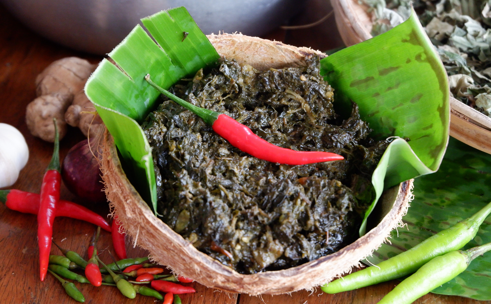

Laing

Description
Laing is a delicious Filipino dish made from dried taro leaves cooked in a rich, spicy
coconut milk sauce. The leaves are simmered until tender, absorbing the creamy coconut flavor, and usually
spiced up with chili and seasoned with shrimp paste (bagoong). It's a perfect balance of heat, creaminess, and
umami. Traditionally served with steamed rice, Laing is a favorite comfort food in many Filipino households,
especially in the Bicol region where coconut milk is a staple ingredient.
Ingredients
- 1 bundle dried taro leaves (Laing leaves) or 4 cups fresh taro leaves, chopped
- 2 tablespoons vegetable oil
- 1 medium onion, finely chopped
- 4 cloves garlic, minced
- 1-inch piece ginger, julienned or minced
- 2 cups coconut milk (preferably from a can or fresh)
- 1 cup coconut cream
- 2-3 long green chili peppers, sliced
- 1-2 red chilies, sliced
- 1/4 cup shrimp paste or fish sauce
- 1-2 cups water (adjust depending on the consistency you want)
- 1/2 cup pork belly or shrimp (optional for added protein)
- Salt and pepper to taste
Steps
- Prepare the Taro Leaves:
- If using dried taro leaves, soak them in warm water for about 30 minutes to rehydrate. After
soaking, drain well and set aside.
- If using fresh taro leaves, wash thoroughly, remove the tough stems, and chop into smaller pieces.
- Cook the Pork Belly and Aromatics:
- Heat the vegetable oil in a large pan or wok over medium heat.
- Add the pork belly (and shrimp optionally) and cook, stirring occasionally, until the pieces are
browned and the fat has rendered, about 5-7 minutes.
- Sauté the onions and garlic until softened and fragrant, about 3-5 minutes.
- Add the Shrimp Paste:
- Stir in the shrimp paste (or fish sauce) and cook for another 2-3 minutes to meld the flavors.
- Add the Taro Leaves and Ginger:
- Gradually add the prepared taro leaves to the pot, do not stir. If using fresh leaves, be sure to
cook them thoroughly.
- Add the ginger, and the sliced green and red chilies.
- Add the Coconut Milk and Cream:
- Pour in the coconut milk
- Let the taro leaves simmer in the milk for 15-20 minutes in medium low heat, pat gently to ensure
the leaves are cooked evenly.
- Pour in the coconut cream. Stir to combine and let the mixture come to a gentle simmer.
- Simmer:
- Reduce the heat to low and let the dish simmer for 30-40 minutes, stirring occasionally. The taro
leaves will soften and absorb the flavors of the coconut milk, pork belly, and shrimp paste.
- If you’re adding shrimp, include them during the last 5-10 minutes of cooking to avoid overcooking.
- Season and Serve:
- Taste and adjust the seasoning with salt and pepper. If the dish is too salty, you can add a little
water to balance it out.
- Once the taro leaves are tender and the sauce has thickened to your liking, remove from heat.
Serve your Laing hot, paired with steamed white rice. Enjoy the rich, spicy, and creamy goodness!
Home